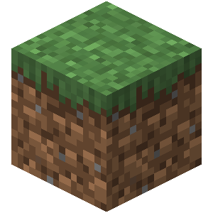

My name is Nicholas Grob. I like reading and am strong in math and gym.
I play soccer and I paddle. Both of these were affected by Covid-19, thought not very much.
I chose to take this class because I am strong in math and learning programing sounded interresting and is usefull in are generation.
So far I have learned how to use most of game maker, and right now I am learing how to make a website using notepad++.

My favorite website is the vpl website, as I use to go to the library one or twice a week because I would read all the books that I go out in a day or two.